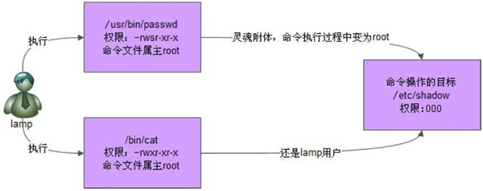
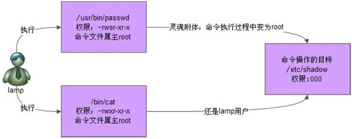

Linux SetUID（SUID）文件特殊权限用法详解
在讲解《权限位》一节时提到过，其实除了 rwx 权限，还会用到 s 权限，例如：
SUID 特殊权限仅适用于可执行文件，所具有的功能是，只要用户对设有 SUID 的文件有执行权限，那么当用户执行此文件时，会以文件所有者的身份去执行此文件，一旦文件执行结束，身份的切换也随之消失。
举一个例子，我们都知道，Linux 系统中所有用户的密码数据都记录在 /etc/shadow 这个文件中，通过 ll /etc/shadow 命令可以看到，此文件的权限是 0（---------），也就是说，普通用户对此文件没有任何操作权限。
这就会产生一个问题，为什么普通用户可以使用 passwd 命令修改自己的密码呢？
本节开头已经显示了 passwd 命令的权限配置，可以看到，此命令拥有 SUID 特殊权限，而且其他人对此文件也有执行权限，这就意味着，任何一个用户都可以用文件所有者，也就是 root 的身份去执行 passwd 命令。
如果我们手动将 /usr/bin/passwd 文件的 SUID 权限取消，会发生什么呢？观察如下命令的执行过程：
我们可以使用下面这张图来描述上述过程：

图 1 SUID示意图
由此，我们可以总结出，SUID 特殊权限具有如下特点：
[root@localhost ~]# ls -l /usr/bin/passwd
-rwsr-xr-x. 1 root root 22984 Jan 7 2007 /usr/bin/passwd
SUID 特殊权限仅适用于可执行文件，所具有的功能是，只要用户对设有 SUID 的文件有执行权限，那么当用户执行此文件时，会以文件所有者的身份去执行此文件，一旦文件执行结束，身份的切换也随之消失。
举一个例子，我们都知道，Linux 系统中所有用户的密码数据都记录在 /etc/shadow 这个文件中，通过 ll /etc/shadow 命令可以看到，此文件的权限是 0（---------），也就是说，普通用户对此文件没有任何操作权限。
这就会产生一个问题，为什么普通用户可以使用 passwd 命令修改自己的密码呢？
本节开头已经显示了 passwd 命令的权限配置，可以看到，此命令拥有 SUID 特殊权限，而且其他人对此文件也有执行权限，这就意味着，任何一个用户都可以用文件所有者，也就是 root 的身份去执行 passwd 命令。
Linux 系统中，绝对多数命令的文件所有者默认都是 root。
换句话说，当普通用户使用 passwd 命令尝试更改自己的密码时，实际上是在以 root 的身份执行passwd命令，正因为 root 可以将密码写入 /etc/shadow 文件，所以普通用户也能做到。只不过，一旦命令执行完成，普通用户所具有的 root身份也随之消失。如果我们手动将 /usr/bin/passwd 文件的 SUID 权限取消，会发生什么呢？观察如下命令的执行过程：
[root@localhost ~]# chmod u-s /usr/bin/passwd
#属主取消SetUID权限
[root@localhost ~]# ll /usr/bin/passwd
-rwxr-xr-x. 1 root root 30768 Feb 22 2012 /usr/bin/passwd
[root@localhost ~]# su - lamp
[lamp@localhost ~]$ passwd
Changing password for user lamp.
Changing password for user.
(current) UNIX password:
#看起来没有什么问题
New passwor:
Retype new password:
password:Authentication token manipulation error <--鉴定令牌操作错误
#最后密码没有生效
注意，实验完成后，一定要再把 /usr/bin/passwd 文件的 SetUID 权限加上。
那么，普通用户可以使用 cat 命令查看 /etc/shadow 文件吗？答案的否定的，因为 cat 不具有 SUID 权限，因此普通用户在执行 cat /etc/shadow 命令时，无法以 root 的身份，只能以普通用户的身份，因此无法成功读取。我们可以使用下面这张图来描述上述过程：

图 1 SUID示意图
由此，我们可以总结出，SUID 特殊权限具有如下特点：
- 只有可执行文件才能设定 SetUID 权限，对目录设定 SUID，是无效的。
- 用户要对该文件拥有 x（执行）权限。
- 用户在执行该文件时，会以文件所有者的身份执行。
- SetUID 权限只在文件执行过程中有效，一旦执行完毕，身份的切换也随之消失。
关注公众号「站长严长生」，在手机上阅读所有教程，随时随地都能学习。内含一款搜索神器，免费下载全网书籍和视频。

微信扫码关注公众号